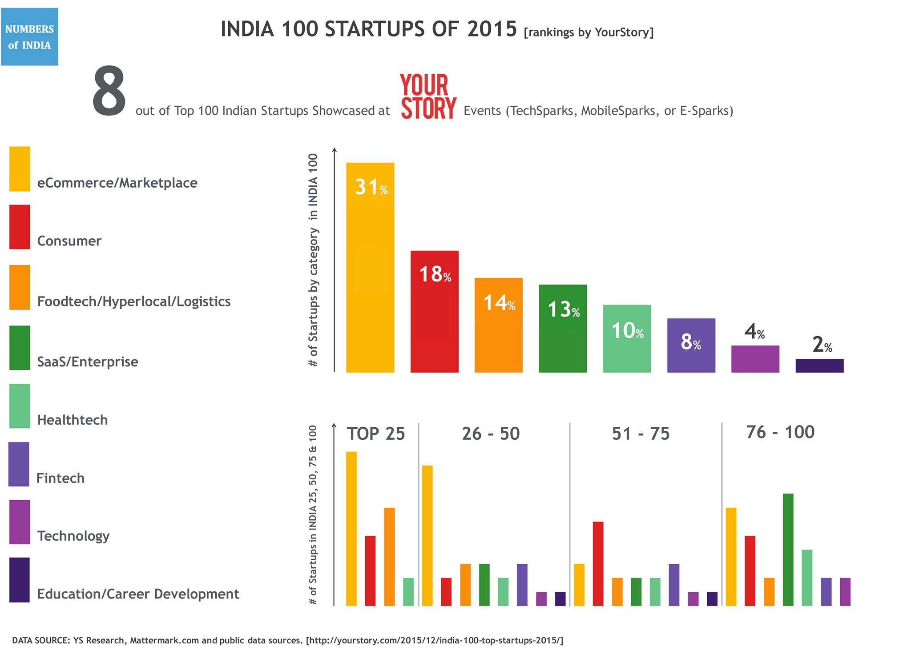

YourStory recently published their list of India's top 100 Startups for 2015.
We couldn't wait to play with the data and visualize it differently to gain some quick insights.
Here are some quick observations:
- eCommerce and Foodtech/Hyperlocal/Logistics pretty much dominate the Top 25 list
- Not even a single SaaS/Enterprise startup made it into the Top 25 list
- There's a more balanced distribution of industry domains amongst the bottom 50 ranked (rank 51-100) startups of INDIA 100
- Overall, eCommerce/Marketplace and Consumer startups are still industry favorites, while Foodtech is expected to catch up sooner than later.
- Education startups could hardly make a mark in INDIA 100. This is interesting because in the last couple of years, there's been a huge rise in Education startups.
Here's the link to the original post by YourStory: